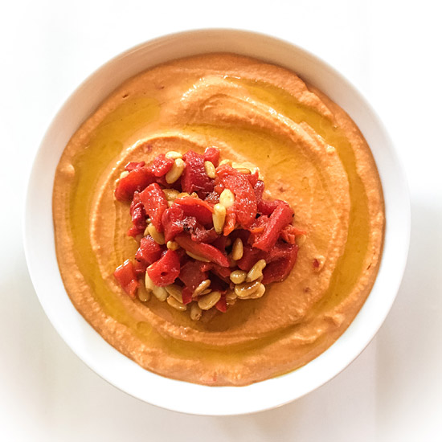

Red Pepper Hummus

Description
An easy to make classic, great for dipping or eating with flatbread!
Ingredients
- red bell peppers
- can of chickpeas
- fresh lemon juice
- tahini
- garlic cloves
- extra virigin olive oil
- ground cumin
- cayenne pepper
- aquafaba
- salt to taste
Steps
Roast peppers
- Move oven rack roughly 5 inches from the heating element.
- Remove core of peppers and cut into flat pieces. Arrange pepper pieces skin0side up on baking sheet. Broil for 5 to 10 minutes until skin is charred
- Add peppers into a resealable plastic bag and wait 10 to 15 minutes (or add peppers to a bowl and cover with plastic wrap). Gently peel the charred pepper skin and discard
Make Hummus
- In the food processor combine tahini with lemon juice and process for about a minute scraping the sides and bottom and bowl until smooth and creamy
- Add olive oil, minced garlic, cumin and salt. Process for 30 seconds, scrape side of processor and process another 30 seconds until well blended
- Open, drain and rinse chickpeas. Add to processor slowly until thick and smooth
- Add the roasted peppers and process for another 1 to 2 minutes or until smooth. If hummus is too thick or is too chunky add 1 to 3 tablespoons of aquafaba (starchy water from canned chickpeas) until happy with consistency
- taste with salt and adjust. Store in airtight containerl, refrigerates up to one week